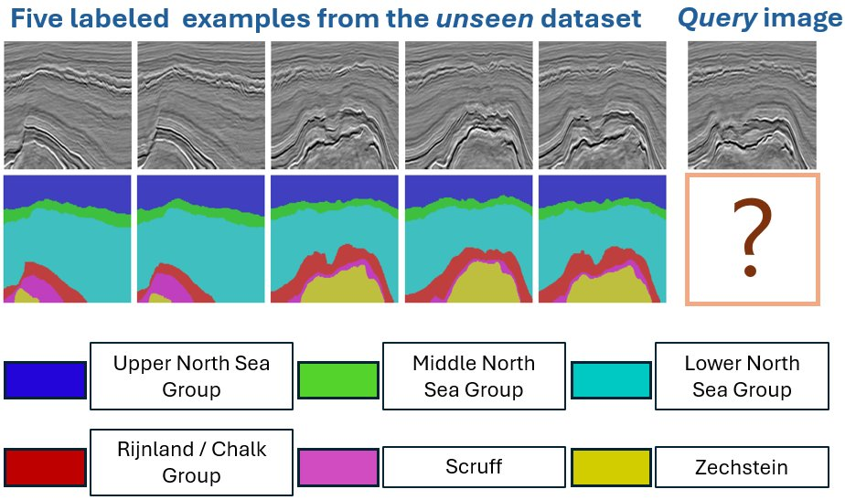
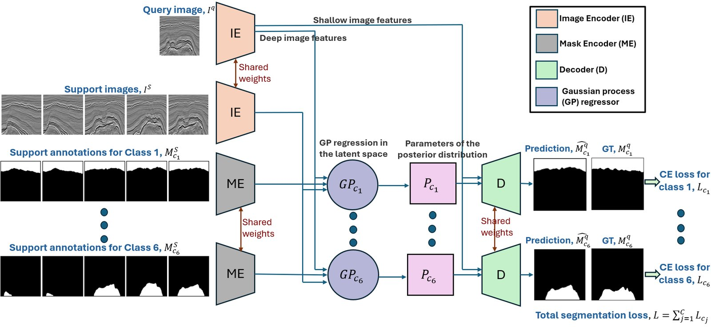
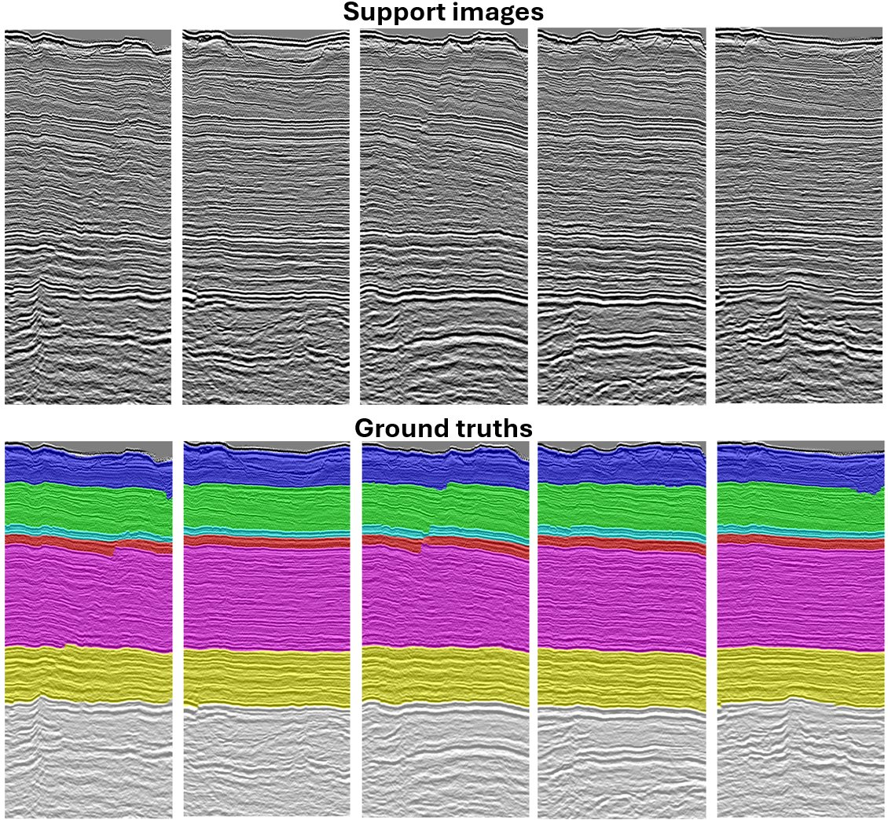

AdaSemSeg: An Adaptive Few-shot Semantic Segmentation of Seismic Facies
In short: given a handful of annotated slices from a seismic survey it has never seen, AdaSemSeg segments the facies on every other slice with no fine-tuning, even when the new survey has a different number of facies than the training data. It does this by breaking multi-class segmentation into class-agnostic binary tasks that share one Gaussian-process backbone.

The problem
Interpreting seismic facies is pixel-wise multi-class segmentation, and annotating 3D seismic volumes is expensive. Few-shot segmentation is a natural fit, but existing methods fix the number of classes at training time. Seismic surveys don't cooperate: F3 (Netherlands) and Parihaka (New Zealand) have six facies each with different names, and Penobscot (Canada) has seven. A fixed-class model can't move between them.
Approach
- Class-agnostic decomposition. Each facies becomes its own binary segmentation task on a shared backbone, and the binary predictions are combined into the final label map. The number of parameters stays fixed no matter how many facies a survey has, so AdaSemSeg can train jointly on surveys with different class counts.
- Gaussian-process regression in latent space. A shared DGPNet backbone runs GP regression at the bottleneck and decoder layers, which gives robust adaptation from very few support examples.
- Cross-domain, no fine-tuning. Training follows a leave-one-survey-out protocol. The target survey is absent from training and only supplies the support set at inference. This is a stricter setting than few-shot work that tests unseen classes within a fixed domain.
- Self-supervised initialization. The image encoder is pretrained with SimCLR on unlabeled seismic data rather than relying on ImageNet statistics.

Results
Comparison with competing methods (FwF1, inline)
| Target survey | Shots | AdaSemSeg | ProtoSemSeg | Transfer learning |
|---|---|---|---|---|
| Parihaka | 1 | 0.84 | 0.52 | 0.54 |
| Parihaka | 5 | 0.86 | 0.58 | 0.62 |
| Penobscot | 1 | 0.93 | 0.58 | 0.67 |
| Penobscot | 5 | 0.96 | 0.71 | 0.89 |
| F3 | 1 | 0.85 | 0.55 | 0.84 |
| F3 | 5 | 0.89 | 0.68 | 0.84 |
ProtoSemSeg is a prototype-based few-shot method; transfer learning fine-tunes a U-Net on the target slices. AdaSemSeg never fine-tunes on the target survey. Full PA / MCA / FwIoU / FwF1 tables for both inline and crossline directions are in the paper.
Ablation: SimCLR initialization (Parihaka, inline / crossline FwF1)
| Encoder initialization | 1-shot | 5-shot |
|---|---|---|
| Random | 0.64 / 0.59 | 0.72 / 0.60 |
| SimCLR on unlabeled seismic data | 0.84 / 0.83 | 0.86 / 0.85 |

Open and reproducible
The repository includes AdaSemSeg, all baselines and competing methods, ablation scripts, and reproduction scripts for every table. Trained weights and processed datasets are archived on Zenodo with DOIs.
Citation
@article{saha2025adasemseg,
title = {AdaSemSeg: An Adaptive Few-shot Semantic Segmentation
of Seismic Facies},
author = {Saha, Surojit and Whitaker, Ross},
journal = {IEEE Transactions on Geoscience and Remote Sensing},
year = {2025},
doi = {10.1109/TGRS.2025.3595010}
}